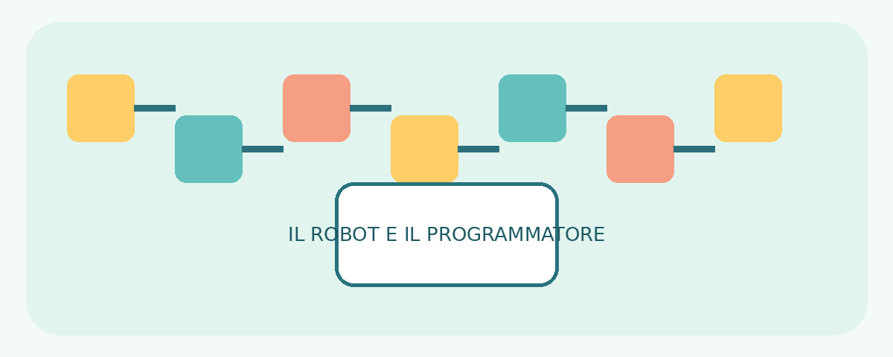
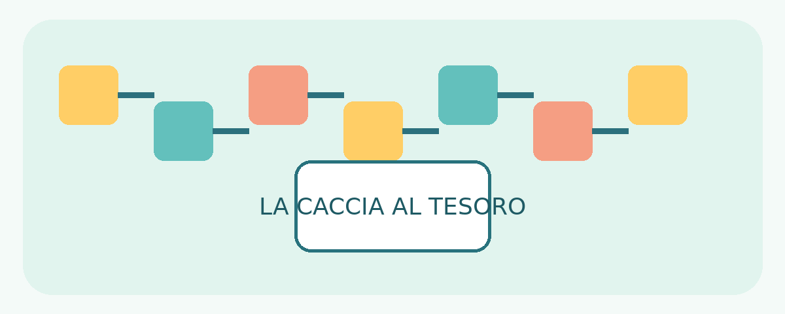
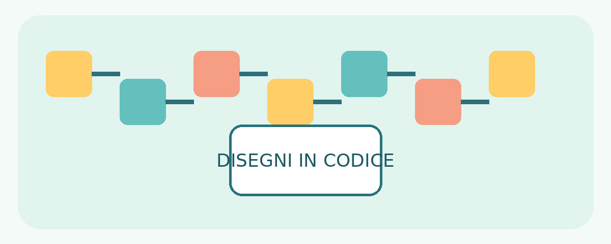
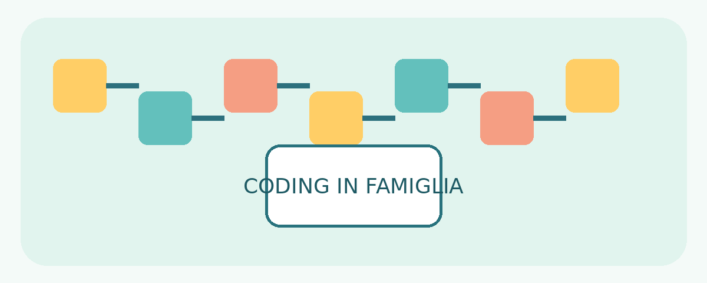

Il coding non comincia necessariamente davanti a uno schermo. Attraverso giochi, percorsi e semplici istruzioni, i bambini possono imparare a ragionare, collaborare e affrontare piccoli problemi in modo creativo.
Che cos’è il coding unplugged?
Il coding unplugged è un approccio educativo che introduce i principi del pensiero computazionale senza computer o tablet. Si utilizzano frecce, cartoncini, reticoli, oggetti e movimento: il bambino osserva una situazione, stabilisce un obiettivo, organizza una sequenza di istruzioni e ne verifica il risultato.
Non significa soltanto imparare a programmare: significa imparare a organizzare il proprio pensiero.
Perché è utile nella didattica quotidiana?
- Pensiero logico: riconoscere sequenze, regolarità e relazioni.
- Problem solving: formulare ipotesi, sperimentare strategie e cercare alternative.
- Orientamento spaziale: consolidare avanti, indietro, destra e sinistra.
- Attenzione e comunicazione: ascoltare, descrivere ed eseguire istruzioni precise.
- Collaborazione e creatività: confrontare idee e inventare nuovi percorsi.
Nel coding l’errore diventa un’occasione di apprendimento: se una sequenza non funziona, si osserva dove si è verificato il problema, si corregge e si prova di nuovo. Questa attività è detta debugging.
Il coding incontra tutte le discipline
- Matematica: sequenze, schemi, reticoli, coordinate e regolarità.
- Geografia: orientamento, mappe e descrizione di tragitti.
- Italiano: riordino di storie, istruzioni e sequenze temporali.
- Educazione motoria: percorsi e giochi di movimento guidati da comandi.
- Arte e immagine: disegni geometrici e composizioni realizzate seguendo codici.
Tre attività da proporre in classe
1. Il robot e il programmatore

Un bambino interpreta il robot e un compagno dà istruzioni: un passo avanti, gira a destra, gira a sinistra. Il robot esegue i comandi alla lettera. Poi i ruoli si invertono.
Obiettivo: orientamento spaziale, pianificazione e precisione comunicativa.
2. La caccia al tesoro

Disegnate una griglia con una partenza, alcuni ostacoli e un tesoro. I bambini devono costruire una sequenza di frecce per arrivare alla meta; si può poi cercare un percorso più breve.
Obiettivo: logica, previsione e risoluzione di problemi.
3. Disegni in codice

Su un foglio a quadretti, gli alunni seguono una sequenza di istruzioni per tracciare una figura. In seguito inventano un disegno e scrivono le istruzioni per un compagno.
Obiettivo: attenzione, organizzazione sequenziale e creatività.
Una risorsa per la didattica inclusiva
Le attività visive, motorie e manipolative possono favorire la partecipazione di bambini con differenti stili e ritmi di apprendimento. È possibile adattare i compiti con percorsi brevi, simboli grandi, consegne essenziali, tempi flessibili e supporti visivi. Ogni proposta va personalizzata in base ai bisogni dell’alunno.
Inclusione significa offrire a ciascuno una possibilità concreta di partecipare, sperimentare e raggiungere piccoli traguardi.
Il coding arriva a casa: giocare con mamma e papà

Il pensiero computazionale si può allenare anche nella vita familiare. Non occorrono strumenti costosi: il genitore accompagna il bambino con domande e incoraggiamento, senza fornire subito tutte le risposte.
1. Il percorso dei cuscini
Create un percorso in soggiorno con cuscini e sedie. Il bambino guida il genitore al traguardo usando comandi precisi.
Si allena: Orientamento e pianificazione.
2. La ricetta programmata
Riordinate i passaggi per preparare una macedonia: lavare la frutta, tagliarla con l’aiuto di un adulto, metterla nella ciotola e mescolare.
Si allena: Sequenze e organizzazione.
3. La mappa del tesoro
Nascondete un piccolo oggetto e disegnate una mappa della stanza. Il bambino programma un tragitto per trovarlo.
Si allena: Problem solving e previsione.
4. Costruisci seguendo il codice
Con i mattoncini, un giocatore detta istruzioni e l’altro costruisce. Poi scambiatevi i ruoli.
Si allena: Comunicazione e verifica.
Tre domande utili per i genitori
- Come hai pensato di risolvere il problema?
- Cosa possiamo cambiare se il percorso non funziona?
- Esiste un altro modo per arrivare allo stesso risultato?
Una piccola sfida settimanale in famiglia
- Lunedì: inventiamo un percorso.
- Martedì: giochiamo al robot.
- Mercoledì: riordiniamo una ricetta.
- Giovedì: cerchiamo il tesoro.
- Venerdì: costruiamo con le istruzioni.
Dieci minuti di gioco condiviso possono diventare un’occasione per allenare logica, autonomia e collaborazione, senza trasformare il coding in un compito aggiuntivo.
Piccole frecce, grandi competenze
Una freccia diventa una scelta, un percorso diventa una strategia e un errore diventa un’opportunità. Il coding senza computer aiuta i bambini a osservare, ragionare, provare e riprovare: competenze utili a scuola, a casa e nella vita quotidiana.